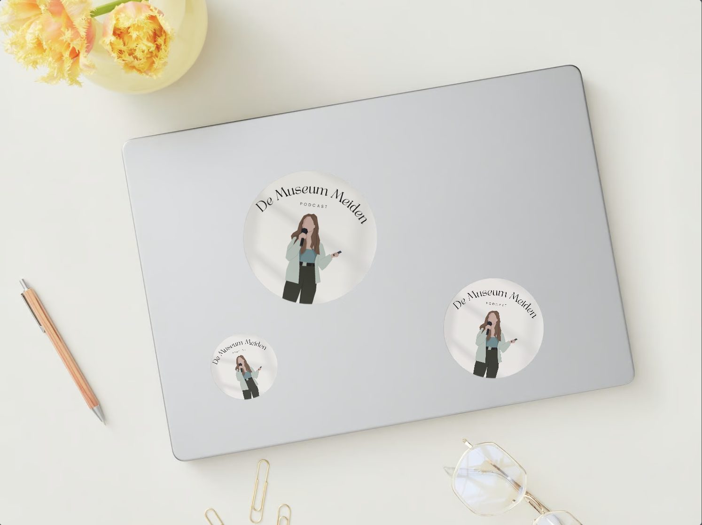
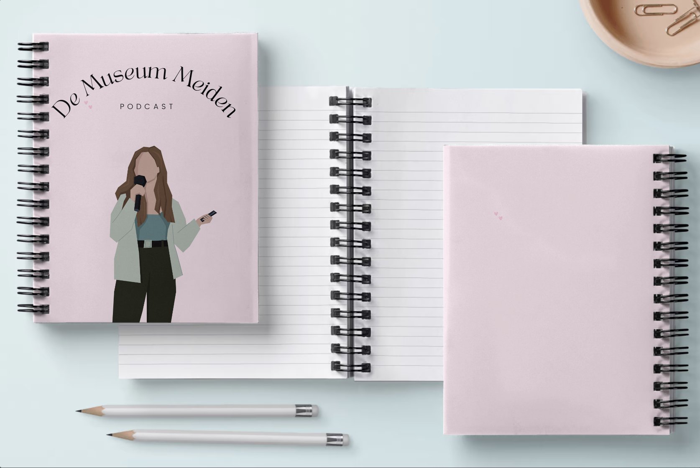
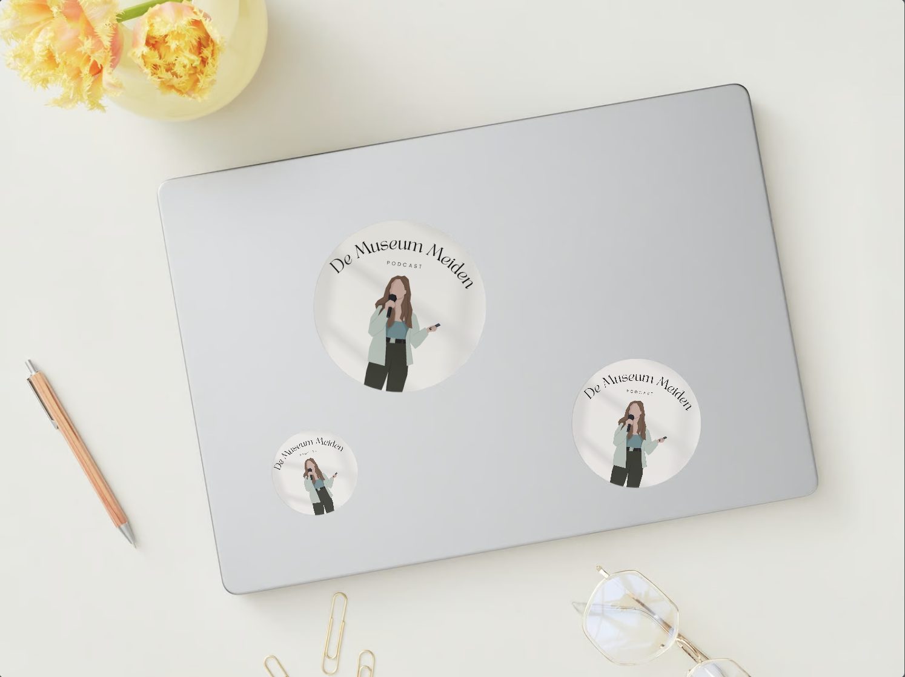
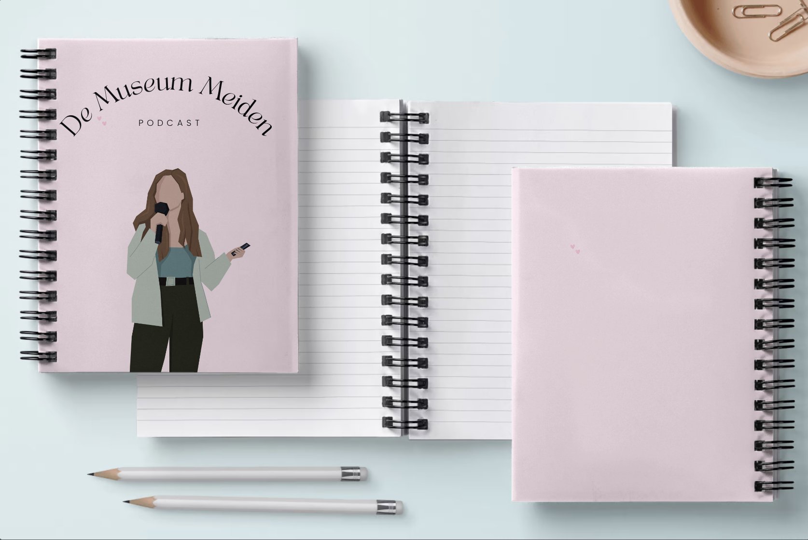
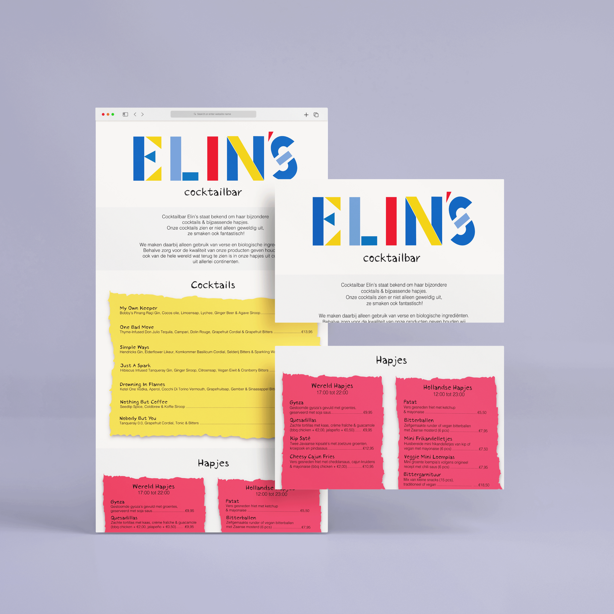
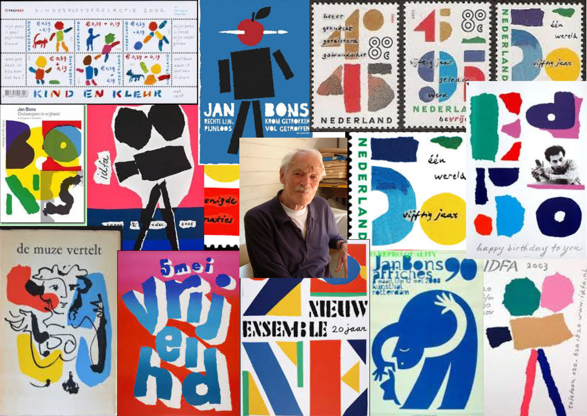
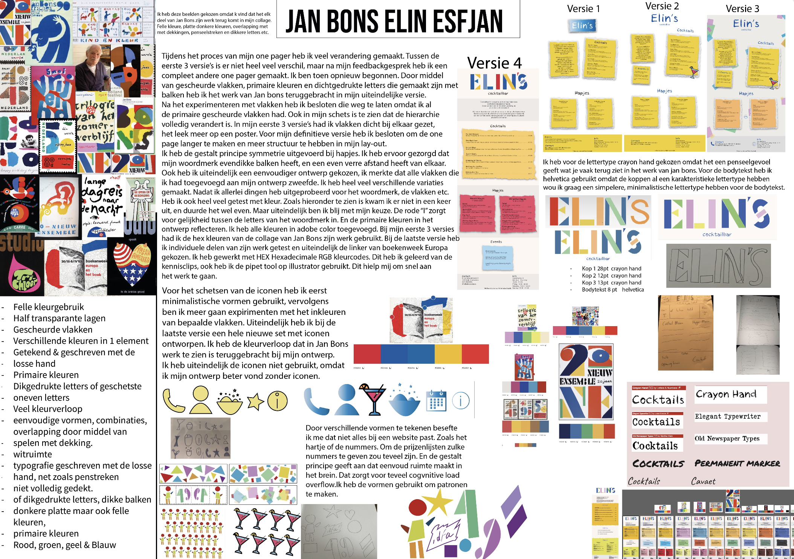

Op naar blok 2 van mijn studieavontuur! Tijdens dit blok kreeg ik de kans om vakken als Internetstandaarden, Content en Vormgeving te verkennen. Ik was vooral enthousiast over Internetstandaarden omdat ik al bekend ben met coderen sinds de middelbare school. Daarom keek ik er enorm naar uit om meer te leren over dit onderwerp en mijn vaardigheden verder te ontwikkelen.
Content
Tijdens het vak Content zijn we diep ingegaan op belangrijke concepten zoals Tone of Voice, Persona/Proto Persona en Less is More. Het was fascinerend om te zien hoe deze concepten de kern vormen van effectieve communicatie en branding. Het hoogtepunt van dit blok was de ervaring met het maken van een podcast in de professionele podcaststudio. Met het onderwerp musea hebben wij musea bezocht aangezien wij dit alle drie erg leuk vonden. We hebben ook Instagram-layouts ontworpen, enquetes uitgevoerd voor de beste taglines en zelfs extra promotiemateriaal zoals notitieboeken en stickers gemaakt om onze podcast te ondersteunen. Dit hebben wij uiteindelijk samengevoegd en gepresenteerd.
 




Vormgeving
In het vak Vormgeving kregen we allemaal een artiest toegewezen, en voor mij was dat Jan Bons. Zijn kenmerkende stijl omvatte felle primaire kleuren, scheurtechnieken en layering met verschillende vakken. De opdrahct bestond uit het ontwerpen van een one pager website voor een cocktailbar, geïnspireerd op de huisstijl van deze kunstenaar."



Internetstandaarden
Tijdens het vak Internetstandaarden kregen we de opdracht om een website te maken met behulp van HTML en CSS over een onderwerp naar keuze. Mijn keuze viel op een reiswebsite genaamd Travely, waar ik mijn eigen reiservaringen kon delen met zelfgemaakte content. Het was een persoonlijke touch die ik graag wilde toevoegen aan mijn project. Als extraatje heb ik ook een animatie toegevoegd met behulp van JavaScript, wat me bonuspunten opleverde. Het was een uitdagende maar ook creatieve manier om mijn vaardigheden op het gebied van webontwikkeling te verbeteren."


Blok 2 van mijn studie was een geweldige ervaring waarbij ik me vooral kon uitleven op het gebied van vormgeving en techniek. Het hoogtepunt was zonder twijfel het creëren van mijn eigen website tijdens het vak Internetstandaarden. Hier leerde ik niet alleen de talen HTML, CSS en JavaScript, maar kon ik ook hiermee een travel blog maken genaamd Travely. Daarnaast heb ik waardevolle vaardigheden opgedaan in het opnemen van podcasts, het maken van promomateriaal en het schrijven van effectieve content. Ook het ontwerpen van een one pager website gebaseerd op de unieke huisstijl van een artiest was een bijzonder leerzame ervaring. Mijn cijfers voor dit blok: een 8 voor Internetstandaarden, een 7 voor Vormgeving en opnieuw een 8 voor Content.